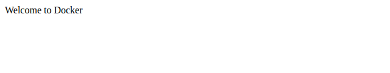

Un serveur web et SSH dans un conteneur Debian¶
Résumé
Ce TP traite un conteneur comme une petite machine : on lance un conteneur Debian, on entre dedans, on y installe Apache pour servir une page web, puis SSH pour s'y connecter à distance, exactement comme sur un serveur classique. Tout fonctionne : la page s'affiche dans le navigateur du PC et la connexion SSH aboutit.
Puis on redémarre le conteneur… et plus rien ne répond. Cette panne volontaire sert de fil rouge pour comprendre ce qu'est vraiment un conteneur (un processus principal, pas un système complet) et pourquoi, en production, on s'y prend autrement : une image par service, configurée d'avance.
| Propriété | Valeur |
|---|---|
| Difficulté | Débutant |
| Durée estimée | 1 h 30 |
| Version décrite | Debian 13.7, Docker Engine 29.10, image debian:latest (Debian 13), Apache 2.4 |
| Place dans le parcours | Partie 3 sur 17 du parcours Docker — jour 1 |
| Dernière mise à jour | 2026-11-24 |
Convention de lecture
🖥️ PC hôte (PowerShell) · 🐧 VM docker-hote, connecté en tssr · 📦 dans le conteneur debian · 🌐 navigateur du PC · ✍️ exercice. Aucun conteneur ne doit utiliser les ports 8080 et 2222 de la VM : vérifier avec docker ps.
1. Lancer un conteneur Debian¶
1.1 Où est-on ?¶
🐧 Avant de commencer, regarder le système de la VM :
PRETTY_NAME="Debian GNU/Linux 13 (trixie)"
NAME="Debian GNU/Linux"
VERSION_ID="13"
VERSION="13 (trixie)"
On fera la même vérification dans le conteneur : il faudra savoir à tout moment si l'on tape dans la VM ou dans le conteneur. Le plus simple est de regarder l'invite du terminal : tssr@docker-hote:~$ dans la VM, root@ suivi d'un identifiant dans le conteneur.
1.2 Démarrer le conteneur¶
🐧 Lancer un conteneur Debian en arrière-plan, avec deux ports publiés :
Unable to find image 'debian:latest' locally
latest: Pulling from library/debian
...
Status: Downloaded newer image for debian:latest
0d0be42f5b3e1c…
| Option | Explication |
|---|---|
--name debian |
Nom du conteneur |
-dit |
Trois options en une : **d**étaché (arrière-plan), **i**nteractif (entrée clavier gardée ouverte), **t**erminal |
-p8080:80 |
Le port 80 du conteneur (Apache) est joignable sur le port 8080 de la VM |
-p2222:22 |
Le port 22 du conteneur (SSH) est joignable sur le port 2222 de la VM |
debian:latest |
L'image officielle Debian, dans sa dernière version (Debian 13 aujourd'hui). Pour un essai jetable comme celui-ci, latest convient ; pour un service durable, on écrirait debian:13 (partie 2) |
Pourquoi -dit, alors que nginx n'en avait pas besoin ?
Le programme principal de l'image debian est bash, un interpréteur de commandes. Lancé sans terminal ni entrée clavier, bash n'a rien à lire : il se termine aussitôt, et le conteneur avec lui.
docker run -d --name sansit debian:latest
docker ps -a --filter name=sansit --format '{{.Names}} {{.Status}} {{.Command}}'
docker rm sansit
Avec -it, bash reçoit un terminal et attend qu'on tape quelque chose : il ne s'arrête pas, et le conteneur reste en marche. nginx, lui, est un serveur qui tourne indéfiniment sans aide.
1.3 Entrer dans le conteneur¶
🐧 Ouvrir un terminal dans le conteneur :
📦 L'invite devient root@0d0be42f5b3e:/# : on est root dans le conteneur, dont le nom de machine est l'identifiant. Vérifier le système :
PRETTY_NAME="Debian GNU/Linux 13 (trixie)"
NAME="Debian GNU/Linux"
VERSION_ID="13"
VERSION="13 (trixie)"
VERSION_CODENAME=trixie
...
2. Installer le serveur web Apache¶
2.1 Mettre à jour et installer¶
-
📦 Mettre à jour la liste des paquets et les paquets déjà présents :
Commande Explication apt updateMet à jour la liste des paquets disponibles apt upgrade -yInstalle les mises à jour disponibles, sans demander de confirmation ( -y)Les messages sont en anglais : l'image Debian est réduite au minimum et ne contient pas les traductions. Elle ne contient pas non plus de pages de manuel, ni même la commande
ps. -
📦 Installer Apache :
2.2 Démarrer Apache¶
-
📦 Vérifier l'état du service :
Sur une Debian normale, Apache démarrerait tout seul après son installation. Ici, rien ne démarre : il n'y a pas de systemd dans le conteneur (on verra pourquoi en section 5). La commande
serviceutilise à la place les anciens scripts de démarrage, qu'on lance à la main. -
📦 Le démarrer, puis revérifier :
Starting Apache httpd web server: apache2AH00558: apache2: Could not reliably determine the server's fully qualified domain name, using 172.17.0.2. Set the 'ServerName' directive globally to suppress this message . apache2 is running.Le message
AH00558est un simple avertissement : Apache n'a pas de nom de domaine configuré et utilise l'adresse IP du conteneur. Il fonctionne normalement.
2.3 Ajouter une page web et la tester¶
-
📦 Remplacer la page d'accueil par défaut :
-
📦 Sortir du conteneur (il continue de tourner) :
-
🐧 Tester depuis la VM, par le port publié :
-
🌐 Ouvrir
http://IP-de-la-VM:8080dans le navigateur du PC :
La page servie par Apache, dans le conteneur, vue depuis le PC.
3. Ajouter un accès SSH¶
Garder la VM en NAT ou en réseau privé hôte
Ce TP ouvre un SSH root avec un mot de passe publié sur cette page, sur le port 2222 de toutes les adresses de la VM. Les ports publiés par Docker ne passent même pas par le pare-feu de la VM (partie 7). Avec les réseaux du lab (NAT de Workstation, réseau privé hôte de VirtualBox), seul le PC peut le joindre. Ne jamais passer la VM en mode pont (bridged) pendant ce TP : elle serait alors joignable par tout le réseau local.
3.1 Installer et configurer le serveur SSH¶
-
🐧 Revenir dans le conteneur :
-
📦 Installer l'éditeur de texte
nanoet SSH :Deux lignes
sysctl: permission denied on key "vm.max_map_count"etsysctl: permission denied on key "kernel.pid_max"peuvent apparaître pendant l'installation : un conteneur n'a pas le droit de modifier les réglages du noyau, qui est partagé avec la VM. C'est normal et sans conséquence. -
📦 Autoriser la connexion de
rootpar mot de passe, interdite par défaut. Ouvrir le fichier de configuration du serveur SSH :Trouver la ligne (Ctrl+W pour chercher dans
nano) :et la remplacer par :
Enregistrer et quitter : Ctrl+X, puis Y (yes :
nanoest en anglais dans ce conteneur, sans traductions) et Enter. -
📦 Donner un mot de passe à
root(il n'en a pas dans l'image) : taperTutoDocker2026!deux fois.Rien ne s'affiche pendant la saisie du mot de passe : c'est normal.
-
📦 Redémarrer le service SSH pour appliquer la configuration, puis sortir :
3.2 Se connecter au conteneur en SSH¶
-
🐧 Depuis la VM, se connecter à soi-même sur le port 2222, qui mène au port 22 du conteneur :
Morceau Explication root@localhostSe connecter en rootà la machine locale (la VM)-p2222Sur le port 2222, publié vers le port 22 du conteneur Répondre
yesà la question sur l'empreinte, taper le mot de passe : l'inviteroot@0d0be42f5b3e:~#montre qu'on est dans le conteneur, par SSH cette fois, et non plus pardocker exec. Taperexitpour revenir dans la VM. -
🖥️ Mieux : se connecter directement depuis le PC, dans PowerShell :
Le port 2222 de la VM mène au conteneur, quelle que soit la machine d'où vient la connexion.
4. Que se passe-t-il au redémarrage ?¶
Tout fonctionne. Simulons maintenant ce qui arrive chaque fois qu'un serveur redémarre, ou que Docker est mis à jour.
-
🐧 Redémarrer le conteneur :
-
🐧 Tester le site web :
Plus de réponse. Le port 8080 est toujours publié, mais personne n'écoute derrière.
-
🐧 Regarder l'état des services dans le conteneur :
Apache et SSH ne sont pas revenus. Le contenu du conteneur, lui, est intact : la page index.html, les paquets installés, la configuration SSH sont toujours là (le conteneur a redémarré, il n'a pas été supprimé). Mais personne n'a relancé les services.
Pourquoi les services ne redémarrent-ils pas ?
Sur une vraie machine, au démarrage, le noyau lance un premier programme, systemd (le processus numéro 1), qui démarre ensuite tous les services activés : Apache, SSH, etc.
Dans un conteneur, il n'y a pas de démarrage de système. Docker lance un seul programme, le programme principal de l'image, qui devient le processus numéro 1 du conteneur. Pour l'image debian, c'est bash :
bash ne sait rien d'Apache ni de SSH. Au redémarrage, Docker relance bash, et seulement bash. Les services lancés à la main par service … start ne faisaient pas partie du conteneur : ils ont disparu avec l'ancien processus.
✍️ Exercice — Remettre le site et SSH en service sans recréer le conteneur, puis vérifier avec curl et ssh.
Réponse
docker exec debian service apache2 start
docker exec debian service ssh start
curl http://localhost:8080
ssh root@localhost -p2222 hostname
La connexion SSH répond avec le nom de machine du conteneur (son identifiant). Tout revient, puisque les fichiers sont toujours là. Mais il faudra recommencer à chaque redémarrage : ce n'est pas tenable sur un serveur.
5. Pourquoi on ne fait pas ça en production¶
Ce TP montre qu'on peut utiliser un conteneur comme une petite VM. Mais c'est un anti-modèle (une façon de faire à éviter), pour plusieurs raisons :
| Problème constaté | Ce qu'on fait en production |
|---|---|
| Les services ne redémarrent pas tout seuls | Un conteneur = un service : l'image a pour programme principal le service lui-même (nginx, Apache…), qui tourne au premier plan. Docker le relance tout seul si on le lui demande (--restart, partie 4) |
| Tout a été installé à la main : impossible de refaire exactement la même chose sur un autre serveur | On utilise une image toute prête (l'image officielle httpd pour Apache, vue en partie 2) ou on écrit sa propre image avec un Dockerfile (partie 14) : l'installation est décrite dans un fichier et reproductible |
| Si le conteneur est supprimé, la page web et la configuration sont perdues | Les données vont dans un volume (jour 2), en dehors du conteneur |
Un serveur SSH de plus à surveiller, avec root autorisé par mot de passe |
Inutile : l'administrateur de la VM a déjà docker exec pour entrer dans un conteneur. Un serveur SSH dans un conteneur est une porte d'entrée supplémentaire pour un attaquant |
Pour mettre Apache à jour, il faut entrer dans le conteneur et lancer apt upgrade |
On remplace le conteneur par un neuf, construit à partir de la nouvelle version de l'image : quelques secondes de coupure, et un retour arrière facile |
Ce dernier point est le plus grand changement d'habitude pour un administrateur : on ne répare pas et on ne met pas à jour un conteneur, on le remplace. Les conteneurs sont jetables ; ce qui doit durer (les données, la configuration) est rangé à part.
Le même service, version production
Le serveur web de ce TP, fait correctement, tient en une commande : l'image officielle httpd, la page servie depuis un dossier de la VM, et un redémarrage automatique.
mkdir -p ~/site && echo "Welcome to Docker" > ~/site/index.html
docker run -d --name apache --restart unless-stopped -p 8081:80 \
-v ~/site:/usr/local/apache2/htdocs/ httpd:2.4
L'option -v (un « dossier monté ») et l'option --restart sont expliquées aux parties 4 et 5. Ce conteneur-là survit aux redémarrages, et la page web survit même à sa suppression.
6. Vérifier son lab¶
Vérifier son lab
🐧 Avec les services relancés (exercice de la section 4) :
curl -s http://localhost:8080
docker exec debian service apache2 status
docker exec debian service ssh status
docker port debian
Résultat attendu :
Welcome to Docker
apache2 is running.
sshd is running.
22/tcp -> 0.0.0.0:2222
22/tcp -> [::]:2222
80/tcp -> 0.0.0.0:8080
80/tcp -> [::]:8080
docker port liste les ports publiés d'un conteneur : une commande pratique quand on ne sait plus par où le joindre.
7. Faire le ménage¶
🐧 Supprimer le conteneur debian (et apache si l'astuce ci-dessus a été essayée) :
Supprimer aussi l'empreinte SSH enregistrée pour le port 2222 : le prochain conteneur publié sur ce port aura une autre empreinte, et SSH refuserait de s'y connecter en criant à l'attaque (REMOTE HOST IDENTIFICATION HAS CHANGED!).
🖥️ Sur le PC, dans PowerShell, faire de même si la connexion depuis le PC a été essayée : ssh-keygen -R "[IP-de-la-VM]:2222".
8. Questions de révision¶
- Quel est le rôle de chacune des options
-d,-iet-t? Pourquoi un conteneurdebianlancé avec-dseul s'arrête-t-il aussitôt ? - Quelle est la différence entre
docker exec -it debian bashetssh root@localhost -p2222? Laquelle est préférable pour administrer un conteneur ? - Pourquoi Apache n'a-t-il pas démarré tout seul après son installation dans le conteneur ?
- Après
docker restart debian, la pageindex.htmlexiste-t-elle encore ? Le site répond-il ? Pourquoi ? - Citer trois raisons de ne pas installer plusieurs services « à la main » dans un même conteneur en production.
Corrigé
-dlance le conteneur en arrière-plan ;-igarde son entrée clavier ouverte ;-tlui fournit un terminal. Le programme principal de l'imagedebianestbash: sans entrée ni terminal, il n'a rien à faire et se termine immédiatement, ce qui arrête le conteneur.docker execpasse par Docker, depuis la VM, sans réseau ni mot de passe : il faut être administrateur de la VM (ou membre du groupedocker).sshpasse par le réseau et un serveur SSH installé dans le conteneur.docker execest préférable : pas de service supplémentaire à sécuriser.- Parce qu'il n'y a pas de systemd dans le conteneur : rien ne démarre les services. Le seul programme lancé par Docker est le programme principal de l'image (
bash). - Oui, la page existe encore : un redémarrage ne supprime pas la couche en écriture du conteneur. Mais le site ne répond plus, parce que Docker n'a relancé que
bash, pas Apache. - Les services ne redémarrent pas tout seuls ; l'installation manuelle n'est pas reproductible ; les données sont perdues si le conteneur est supprimé ; un serveur SSH ajoute une surface d'attaque ; les mises à jour se font à la main dans le conteneur au lieu de le remplacer.
Ressources¶
- Image officielle Debian sur Docker Hub — les étiquettes disponibles (
13,trixie,13-slim…). - Image officielle httpd (Apache) sur Docker Hub — la bonne façon de faire tourner Apache dans Docker.
- Docker — Faire tourner plusieurs processus dans un conteneur — pourquoi on évite, et comment faire quand c'est indispensable (en anglais).
- Partie précédente : Premiers conteneurs · Partie suivante : Gérer Docker avec Portainer et LazyDocker.